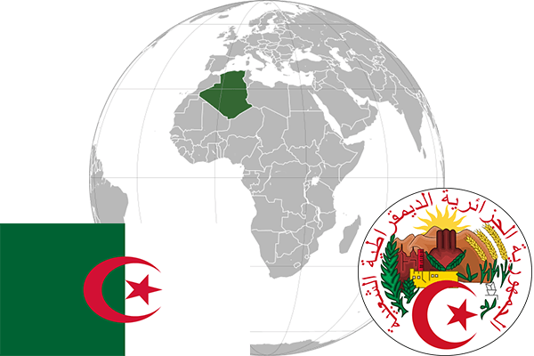

To`liq nomi: Jazoir Demokratik va Xalq Respublikasi
Region: Afrikaning shimoliy-gʻarbi
Qonunchilik shakli: Respublika
Mustaqillik kuni: 5 iyul 1962 (Fransiyadan)
Poytaxti: Jazoir
Maydoni: 2 381 740 км² ² (dunyoda 10 -o`rinda )
Chegaradosh davlatlari: Marokash, Tunis, Liviya, Niger, Mali, Mavritaniya
Aholisi: 40 400 000 (dunyoda 34 -o`rinda ) 2016 roʻyxat
Aholi zichligi: 15,9 /km²
Aholining o`rtacha yoshi: 73,45 yil ( 75,00 ayollar, 71,9 erkaklar)
Rasmiy tili: Fransuz tili
Dini: 99% musulmonlar
Pul birligi: Algerian Dinar (DZD)
Telefon prefiksi: +213
Internet domen: .dz
Xalqaro tashkilotlarga a`zoligi: OPEC (Neftni eksport qiluvchi davlatlar tashkiloti) 1969-yil. BMT (1962-yil). Arab davlatlar uyushmasi (16.08.1962)
Dengiz va okeanlarga chiqishi: O`rtayer dengizi
YIM: Butun: $ 599,83 milliard, Jon boshiga: $ 14,610 (2016- yil roʻyxati)
Yirik shaharlari: Jazoir, Oran, Konstantina, Annaba.